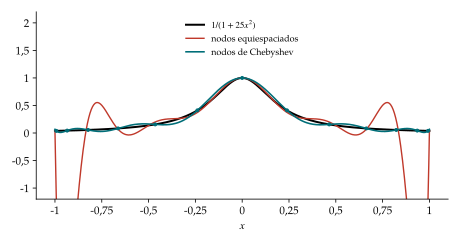

Para arrancarLo que viste es la base de todo el cómputo científico: aprendizaje automático, simulaciones del clima, gráficos 3D. Este capítulo asoma algunas de las puertas que quedan abiertas.
Estos son algunos de los temas de las exposiciones finales: ideas que no alcanzamos a ver en clase pero que salen naturalmente de lo que sí vimos.
22.1 Chebyshev y el fenómeno de Runge
El error de interpolación (Teorema 5.6) tiene el factor ω(x)=∏i=0n(x−xi). Con nodos equiespaciados, ω es enorme cerca de los extremos y, para f(x)=1+25x21 en [−1,1], el error crece con n: es el fenómeno de Runge (1901).
Entre todos los polinomios mónicos de grado n, T~n=21−nTn es el de menor máximo en [−1,1], y ese máximo es 21−n. Por tanto, si los nodos de interpolación son las raíces xk=cos2(n+1)(2k+1)π de Tn+1, [−1,1]max∣f(x)−P(x)∣≤2n(n+1)!max∣f(n+1)∣.
Demostraciónmostrar
T~n alcanza ±21−n con signos alternados en los n+1 puntos cosnkπ. Si un mónico Q tuviera max∣Q∣<21−n, el polinomio T~n−Q, de grado ≤n−1, cambiaría de signo n veces y tendría n raíces: sería 0. Absurdo.
Los nodos de Chebyshev son las proyecciones sobre el eje de puntos equiespaciados en una semicircunferencia: se agrupan hacia los extremos, justo donde hace falta. Con ellos la interpolación de cualquier función analítica converge.
InteractivoRunge contra Chebyshev
Compara los dos tipos de nodos con grado alto.
22.2 Las cuencas de Newton
Al aplicar Newton a z3−1=0 en el plano complejo, cada punto inicial converge (casi siempre) a una de las tres raíces cúbicas de la unidad. Coloreando cada punto según la raíz a la que llega se obtiene un fractal: la frontera entre dos cuencas es también frontera de la tercera. Cayley planteó el problema en 1879 y lo encontró «difícil»; la respuesta llegó un siglo después con la dinámica holomorfa (los conjuntos de Julia). La portada interactiva de este libro dibuja estas cuencas.
Toda matriz A∈Rm×n se escribe A=UΣVt con U, V ortogonales y Σ diagonal con σ1≥σ2≥⋯≥0. Además, la mejor aproximación de rango k de A en norma 2 es Ak=∑i=1kσiuivit (Eckart–Young), con error σk+1.
Una imagen es una matriz de intensidades; guardando solo los primeros k valores singulares se comprime: con k=50 una foto de 1000×1000 ocupa el 10% y apenas cambia. Los σi2 son los valores propios de AtA, y σ1=∥A∥2 (Teorema 20.2).
22.4 La transformada rápida de Fourier
Dados n valores fj, sus coeficientes de Fourier discretos ck=n1∑jfjω−jk, con ω=e2πi/n, cuestan O(n2) operaciones. Cooley y Tukey (1965) observaron que, si n es par, la suma se parte en índices pares e impares, dos transformadas de tamaño n/2: T(n)=2T(n/2)+O(n)⟹T(n)=O(nlogn). Con n=106 es pasar de 1012 a 2×107 operaciones. La base de la FFT es la ortogonalidad discreta ∑jωjkωjl=nδkl, la misma que explica por qué la regla del trapecio es tan buena para funciones periódicas (Observación 11.5).
Halla los valores singulares de la cizalla A=(1011).
Soluciónintenta primero
AtA=(1112) tiene valores propios 23±5=φ±2; los valores singulares son φ y φ1 (Ejemplo 20.4). Su producto es ∣detA∣=1.
🔎 Profundiza: Chebyshev al rescate
Interpolamos f(x)=1+25x21 con 13 nodos en [−1,1]. Con nodos equiespaciados, el error máximo es ≈3,66 (¡el polinomio se dispara en los bordes!). Con los nodos de Chebyshev xk=cos26(2k+1)π, el error máximo baja a ≈0,07.

Fenómeno de Runge: los nodos equiespaciados (rojo) oscilan en los extremos; los de Chebyshev (verde azulado) se amontonan allí y lo evitan.
La razón es que los nodos de Chebyshev minimizan max∣∏(x−xk)∣, el factor que aparece en la fórmula del error de interpolación: el polinomio mónico de Chebyshev de grado n+1 tiene máximo 2−n.
Ojo, parcero: errores que veo en los parciales
el computador siempre tiene razón → verifica orden, estabilidad y condicionamiento
más precisión de máquina resuelve todo → un problema mal condicionado sigue siéndolo
✦Practica activa
Retos para afianzar las ideas del capítulo: arma la demostración con los bloques en el orden correcto y caza el paso falso de un argumento.
🧩 Ordena la demostraciónElegir un método
Ordena, de menor a mayor costo por paso, estos métodos para un PVI.
🔍 Encuentra el errorPrecisión de máquina
Se discute el épsilon de máquina ε en doble precisión.
✎ Repaso del capítulo
Máximo en [−1,1] del mónico de Chebyshev de grado 3
T~n=21−nTn y ∣Tn∣≤1: el máximo es 21−3=41=0,25.
ε de máquina en doble precisión (orden de magnitud, exponente de 10).
puedes escribir fracciones como 3/2
ε≈2,2×10−16: el exponente es −16.
Un algoritmo estable puede dar malos resultados en un problema mal condicionado.
La estabilidad no corrige el mal condicionamiento: el error relativo puede ser hasta κ⋅ε. Verdadero.
Monte Carlo es útil sobre todo para…
Su error O(1/N) no depende de la dimensión: brilla en integrales de muchas dimensiones.